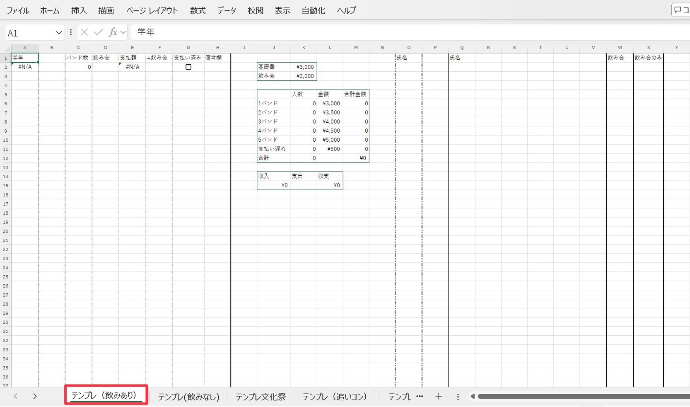
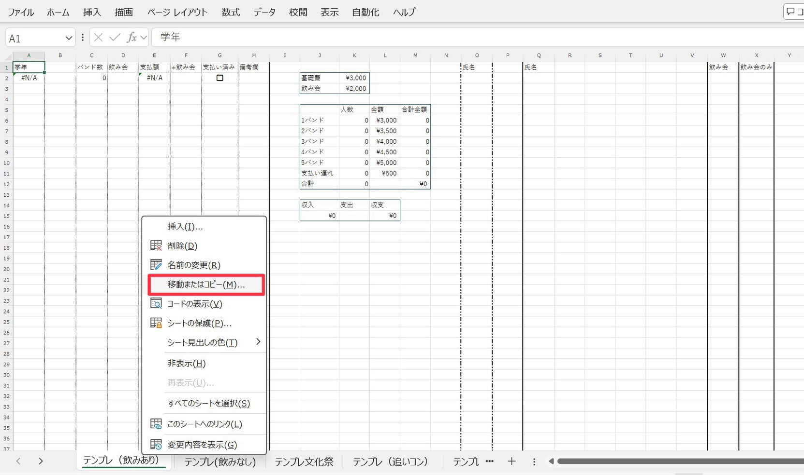
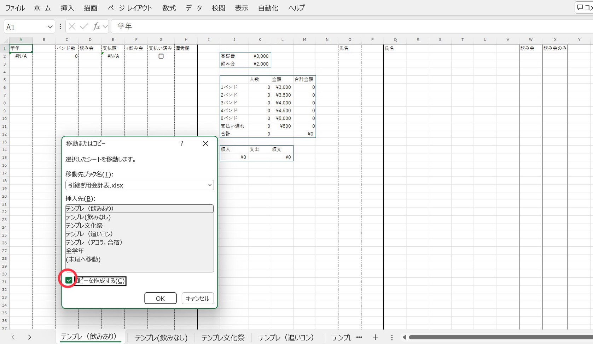
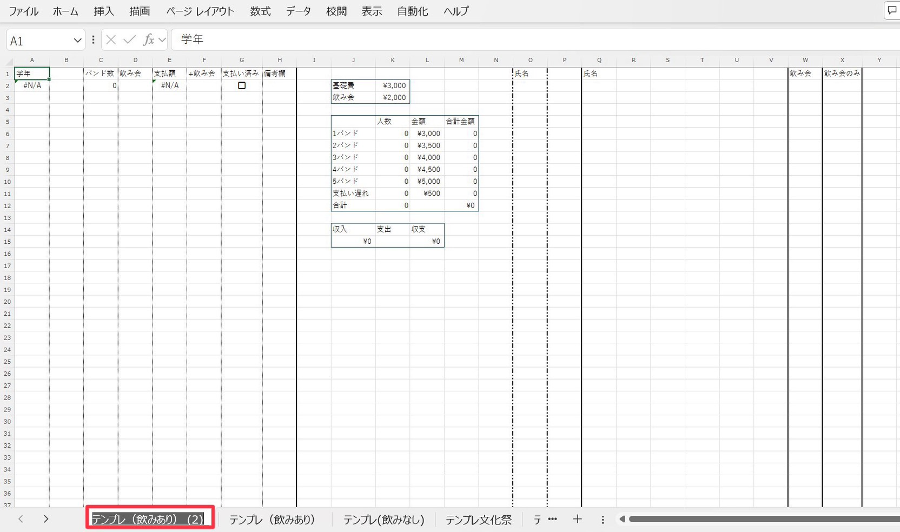
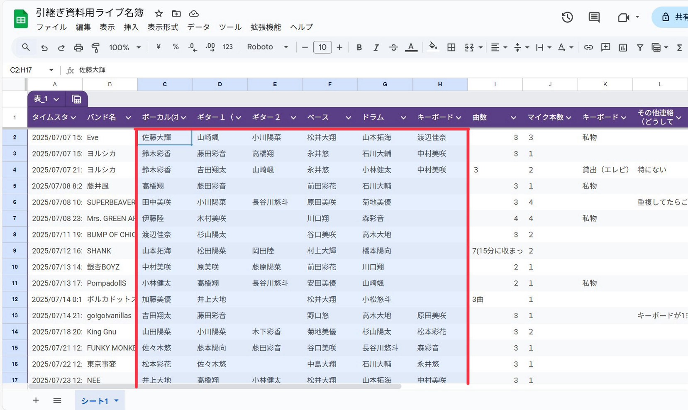
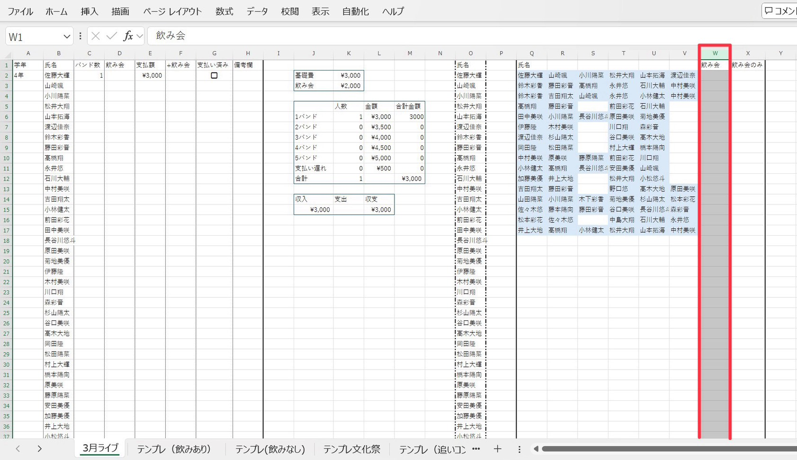

エクセル操作手順
① テンプレ（飲みあり）を開く

Excelを開き、【テンプレ（飲みあり）】の表を選択してください。
② コピー元を選択する

コピーしたい範囲を選択してください。
③ コピー操作

①移動先は一番上を選択。
④ 複製した表の名前を変更する

複製した表をダブルクリックOR右クリックをし、表の名前をライブにあった名前に変更する。
⑤ 氏名表作成
テンプレート上V～Qの部分にGoogleフォームで集めた名簿を持ってくる
⑥ 氏名表作成２

googleフォーム上のボーカル‐キーボードをコピー
⑦ 氏名表作成（貼り付け）

①氏名の真下のセルを右クリック
⑧ 氏名表作成
①青く変化しないセルは間違っているため、正しい名前に変更する。
⑨ 氏名表作成２
①氏名表の隣にある氏名列（O列）を選択してコピー
⑩ 氏名表作成
①列Bを選択して右クリック ※Ctrl＋Vでは貼り付けないように注意する。
⑪ 飲み会参加名簿作成

googleフォーム上の飲み会参加者をコピー
⑫ 飲み会参加名簿作成（貼り付け）
①飲み会列（列W）を右クリック
⑬ 飲み会参加名簿作成
「飲み会のみ」と書いてあるセルを下まで反映させる（セル右下■をダブルクリック）
⑭ セル内の関数反映
①セルA2を下まで反映させる（セル右下■をダブルクリック）
⑮ 表の並べ替え
①学年～支払い済み列（列A～列G）を選択
⑯ 飲み会参加名簿作成
「飲み会のみ」と書いてあるセルを下まで反映させる（セル右下■をダブルクリック）
⑰ 表の並べ替え
①学年～支払い済み列（列A～列G）を選択
⑱ 飲み会参加名簿作成
「飲み会のみ」と書いてあるセルを下まで反映させる（セル右下■をダブルクリック）
×